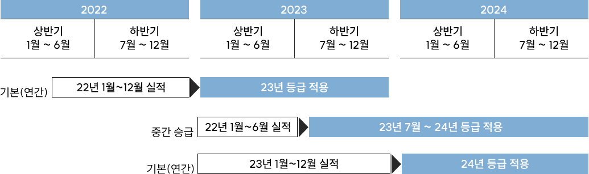

건축물의 외부 패턴을 내부에 그대로 끌어들여, 채광과 아름다운 북항의
자연경관을 로비에 들여놓은 로비공간을 조성하였다.
밝고 깨끗한 이미지의 하얀색 프레임을 통해 내부로 들어오면,
반대로 강렬한 인상의 우드 드럼의 매스가 맞이한다.
중후한 톤의 목재 로 된 겉옷과 붉은색의 내피는 마치 거대한 악기와 같은
이미지를 떠오르게 하고, 곧 이어질 ‘Auditorium’의 강렬한 이미지를
암시적으로 나타내는 경계의 공간으로 이루어진다.
오페라 하우스의 심장이 되는 공간이다. 내부로 진입하면
짙고, 강렬한 톤의 균질한 목재가 바닥으로부터 시작하여,
벽체를 휘감고, 발코니를 타고 올라가 천장의 말발굽 형태까지
자연스럽게 흘러간다.
그 중심엔 금색 물결을 두르고 있는 크리스탈 빛이 공간을 휘어잡고 있다.
벽체 또는 발코니 등 전체 공간에 적용되는 목재는 음 환경 조성을
위하여 다양한 형태로 구성되었다.
이러한 구성은 전기음향 설비와 더불어 최고 수준의 오페라와
오케스트라의 어쿠스틱 공연이 가능하도록 조성되었다.
퍼포먼스, 다목적 공연을 수용하는 공간으로,
전체적으로 우드 톤의 마감재와 루버로 계획이 되어있고, 부분적으로
커튼을 활용하여 목적에 맞게 내부 환경을 조율할 수 있도록 계획하였다.
1면에 거울를 배치하여 관객에게 보여지는 모습을 보며 연습할 수 있다.
천장 조명은 원하는 위치에서 국부 조절도 가능하게 설계되었다.
최대한 간결하게 공간을 구성하여 장기간 연습하는데 있어서
불편함이 없게 계획되었다.
풀사이즈 리허설룸은 오디토리움과 같은 컨디션으로 본 무대에 서기 전
최종 리허설을 할 수 있는 공간이며, 블랙박스로 디자인을 최소화하고
연기자의 연기력과 오로지 무대만을 위한 공간이다.
때로는 이동식 객석을 이용하여 공연장으로도 이용할 수 있게 설계하였다.
3면에 거울를 배치하여 자유로운 각도와 포지션에서 연습에 집중력을
높여주어 디자인과 기능을 갖춘 리허설디자인을 완성하였다.
내부 조명 계획은 직접 조명을 최소화하여, 장시간 연습하는데 있어
피로감을 최소로 하기 위하여 계획되었다.
최적화된 음환경 조성을 위하여 계획되었고, 건축물의 외부 모듈을
재해석하여, 통일성 있는 디자인을 조성하였다.
감상을 방해할 만한 행동
- 객석 내 음식물 반입 및 섭취 |
사진 촬영은 절대 금물
공연 중에는 사전 허가를 받은 전문인만 |
||
어린이 동행 시
|
공연장 도착은 20분전,
|
||
음식물은 휴게실에서
|
공연장에서 조심해야 할 물건들
소리가 많이 나는 비닐제품이나 꽃다발, 음식물 등은 |
옥상 중앙에 위치한 야외카페로
부산항과 남포동 전경을 바라볼 수 있으며
카페 앞 계단에 앉아서 야외 공연을 즐길 수 있는 곳으로
넓은 공원을 산책한 뒤 휴식을 즐기기 좋은 곳입니다.
공연 관람 전후, 식사를 못하신 고객분들을 위해 간단한 음식부터
캐쥬얼한 레스토랑을 운영하고 있습니다.
편안한 공연 관람을 위해 무인 물품보관함을 이용하실 수 있습니다
로비 개방 시 ~ 마지막 공연 종료 20분 후
| 당일티켓 소지자 |
이용료 | 4시간 무료 |
|---|---|---|
| 추가 이용료 |
소형(500*360*600) 1,000원(시간 당) 대형(500*900*600) 2,000원(시간 당) |
|
| 당일티켓 미소지자 |
이용료 | 소형(500*360*600) 1,000원(시간 당) 대형(500*900*600) 2,000원(시간 당) |
공연 티켓의 QR코드를 기기화면에 인식 (중복사용 불가)
051–100-1000(10:00~20:00)
현재 상연하는 공연과 관련된 전시장을 운영하고 있습니다.
분실하신 물건을 보관하고 있습니다.
아래의 절차에 따라 분실물을 관리 중이니 안전관리팀 051-100-1111 으로 분실물 보관여부 확인 후 인계 받으시기 바랍니다.
공연장, 화관구내 등
안내데스크 및 안전관리팀에서
3개월이내 보관
소유 확인 후 본인 인계
습득일로부터 3개월 이내 분실소유자가 나타나지 않을 경우,
경찰서 인계 또는 자체 폐기
| 지하철 이용시 | 버스 이용시 | 자가용 이용시 |
|---|---|---|
| 부산역 6번출구에서 도보 25분 거리 |
5-1번 (2부두 하차, 부산항 국제여객터미널 하차) 1004번 (부산항 국제여객터미널 하차) |
부산오페라하우스 내부주차장, 야외주차장 이용(유료) 주차요금 : 1시간 3000원 (공연관람시 할인) 네비게이션 검색 : 부산오페라하우스 주차장 |
- 공연, 전시(유료), 체험(유료전시의 체험) 이용 관객은 부오하 공영주차장 이용 시 주차요금 할인을 받을 수 있습니다.
- 출차 전 무인정산기에서 사전 정산을 완료하시면 출차 시 혼잡을 피할 수 있습니다.
- 기타 할인 적용은 관련 증서를 지참하여 유인 정산소를 이용해 주시기 바랍니다.
- 할인된 요금으로, 추가할인은 적용되지 않습니다.(ex. 경차, 장애인, 전기차 할인 등)
- 미니버스, 대형버스는 사전예약 후 주차장 이용이 가능합니다.(최대 5면, 이용요금 문의)
- 만차인 경우 이용 불가
| 예매 시간 | 24시간 예매 가능 (공연시간 2시간 전까지 인터넷 예매 가능, 일부공연 제외) |
|---|---|
| 예매 방법 | 회원가입 및 로그인 > 공연선택 > 예매날짜 / 시간 / 좌석 선택> 결제선택 / 예매완료 |
| 예매 수수료 | 예매 수수료 없음 |
| 결제방법 |
신용카드 결제카드결제를 하시면 바로 결제가 완료됩니다. 가상계좌 결제
- 가상계좌는 해당 공연일로부터 3일 전까지 전화나 인터넷으로 예매 할 수 있습니다. |
| 예매 시간 |
09:00 ~ 20:00 (둘째주 넷째주 월요일 휴무, 공휴일인 경우 다음날 휴무) * 공연 2시간전까지 가능, 일부 공연에 한하여 전화 예매가 불가능 할 수 있습니다. |
|---|---|
| 예매 방법 | 전화 : 051- 100 - 1000 |
| 예매 수수료 | 예매 수수료 없음 |
| 결제방법 | 신용카드, 가상계좌 결제 가능 |
| 예매 시간 | 10:00 ~ 20:00 (둘째주 넷째주 월요일 휴무. 공휴일인 경우 다음날 휴무) * 점심시간: 13시~14시 |
|---|---|
| 예매 방법 | 서비스 플라자를 방문하시면 바로 예매하실 수 있습니다. 서비스 플라자 위치는 세종문화회관 중앙계단 위에 위치하고 있습니다. |
| 예매 수수료 | 예매 수수료 없음 |
| 결제방법 | 신용카드, 가상계좌 결제 가능 |
| - 인터넷 예매 |
할인권종에서 장애인 국가유공자 할인을 선택하여 선 할인 예매 후 장애인 복지카드, 국가유공자 카드를 지참하시고 현장에서 증빙 후 입장권을 수령해 주시기 바랍니다. |
|---|---|
| - 현장 예매 | 장애인 복지카드, 국가유공자 카드를 지참하시고 현장에서 증빙 후 예매와 발권을 동시에 진행하시면 됩니다. |
| - 전화 예매 | 부산오페라하우스 고객센터에서 전화예매 시 장애인, 국가유공자임을 말씀해 주시고, 현장에서 장애인 복지카드, 국가유공자 카드 지참하시어 증빙 후 입장권을 수령해 주시기 바랍니다. |
부산OH!멤버십만의 특별한 혜택을 누리세요!
부산OH!멤버십은 부산오페라하우스 이용 경험에 따라 혜택을 제공하는 통합 멤버십 서비스입니다.
|
|||||||||
|
부산OH!멤버십 혜택 대상자 |
결제금액 100원 당 1 POINT 로 환산 하여 적립
|
||||||||
|---|---|---|---|---|---|---|---|---|---|
|
부산OH!멤버십 등급 기준 및 혜택 부산OH! 멤버십 프로그램은 부산오페라하우스 이용 경험에 따라 네 개의 등급으로 나누어지며, 등급에 따라 더욱 다양한 혜택이 제공됩니다. |
* 일부 기획공연 (전시) 및 대관공연 (전시)의 경우, 할인율 및 할인적용 구매 가능 매수가 달라질 수 있습니다.
|
||||||||
부산OH! 멤버십
부산OH!멤버십은 |

* 기본(연간) : 1월~12월 구매 실적 > 차년도 1월 반영, 등급 설정 후 1년간 혜택 유지 (1월~12월) |
||||||||
재단법인 부산오페라하우스 부산광역시 중구 북항 (우)00000
대표자 : 홍길동 사업자등록번호 : 000-00-00000
통신판매업신고 : 부산중구-0000호


전화예매 및 문의 : 051-000-0000
COPYRIGHT(C) BUSAN OPERA HOUSE. ALL RIGHTS RESERVED